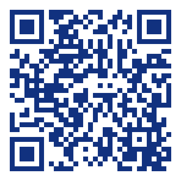

Trente secondes de lecture. À rouvrir quand vous voulez avec le bouton 👁 en haut à droite.
🗓️
Seize séances de 3 heures, puis six ateliers d’une journée. Les séances donnent les outils. Les ateliers, en avril et en mai 2027, les font servir : vous tradez sur simulateur toute la journée, avec un thème par journée.
🧭
Le fil rouge. Personne ne peut vous promettre des gains. Ce cours vous apprend trois choses : limiter vos pertes, tester une idée avant de risquer de l’argent, et suivre un plan.
📓
Le journal de trading. Dès la séance 3, vous tradez sur un compte simulé et vous notez chaque trade dans le journal de ce site : entrée, stop, objectif, sortie, et si le plan a été respecté. Le journal se tient jusqu’au dernier atelier.
📝
L’évaluation. Elle porte sur le journal et sur le respect de votre plan de trading, plus un test de connaissances à la séance 16. Le gain réalisé sur le simulateur ne compte pas : noter le gain récompenserait la prise de risque.
📊
Enregistré et partagé. Connectez-vous une fois avec votre nom et un mot de passe de votre choix ; votre travail vous suit d’un appareil à l’autre et parvient à l’enseignant. Les questions passent par le bouton de messages, en bas à droite.
ESM · Parcours Trading · 2027
Trading : limiter ses pertes, tester une idée, suivre un plan
La plupart des gens arrivent dans un cours de trading avec l’espoir de gagner vite. Ce cours ne promet pas de gains. Il apprend à mesurer ce qu’un trade coûte, à limiter la perte avant de chercher le gain, à tester une règle avant de la jouer avec de l’argent, et à tenir un plan quand le marché pousse à faire le contraire. Seize séances donnent les outils ; six journées d’atelier sur simulateur les font servir.
Enseignant : Prof. Jan Erik Meidell, PhD, avec des intervenant·es pour les séances 3, 5 à 8 et 14 · Volume 16 × 3 h + 6 ateliers d’une journée · Évaluation journal de trading et plan de trading, test de connaissances à la séance 16

Ouvrir ce cours sur votre téléphone
Scannez le code avec l’appareil photo. Si l’app Insights est installée, le cours s’ouvre dedans ; sinon, dans le navigateur. Puis connectez-vous avec votre nom et un mot de passe de votre choix (« Première fois ») : le même compte sur l’ordinateur et sur le téléphone.
janerikmeidell.com/ESM/trading
janerikmeidell.com/ESM/trading
Scannez : même nom, même mot de passe sur tous vos appareils · cliquez ou Échap pour fermer
Votre progression dans le cours
0%
TerminéEn coursÀ venir
Le fil rouge · trois choses à apprendre
🛡️
Limiter ses pertes
Le risque vient en premier (séance 2), avant les stratégies. Chaque trade a une taille calculée depuis le stop, et chaque journée a une perte maximale au-delà de laquelle on s’arrête. Ces règles s’appliquent ensuite dans chaque séance et chaque atelier.
🧪
Tester avant de risquer
Un indicateur devient une règle écrite (séance 10), et la règle est testée sur le passé, coûts inclus, avant d’être jouée. Le backtest est le seul endroit où une idée qui ne marche pas ne coûte rien (séance 15).
📓
Suivre un plan
Un compte simulé dès la séance 3 et un journal tenu jusqu’au dernier atelier. À la fin, un plan de trading écrit, défendu devant la classe (atelier 6). La note mesure la discipline, pas le gain.
Les seize séances · trois blocs
Chaque carte dit ce que vous faites pendant la séance et les objectifs du cours (CLO) qu’elle sert. Les séances s’ouvrent au fil du semestre ; une carte grise est une séance pas encore en ligne. Les séances 3, 5, 6, 7, 8 et 14 sont données par des intervenant·es ; leur contenu détaillé sera publié avec la séance.
Les six ateliers pratiques · une journée sur simulateur
Le principe : vous tradez en simulation toute la journée, selon votre plan. Chaque journée a un thème, discuté avec le groupe pendant les moments calmes du marché, et un livrable que vous déposez le soir même. L’atelier 2 est placé, si possible, un jour de publication économique majeure.
Le journal, le plan de trading et l’évaluation
📓 Le journal de trading · de la séance 3 au dernier atelier
Le journal est la page journal.html de ce site. Pour chaque trade, vous écrivez : la date, l’actif, le sens (achat ou vente), la taille, le prix d’entrée, le stop, l’objectif, le prix de sortie, le résultat en francs, et si le plan a été respecté (oui ou non), avec une note d’une ligne. La page calcule le reste : le taux de réussite, le gain moyen et la perte moyenne, l’espérance par trade, le profit factor, le drawdown maximal, et la part des trades qui ont respecté le plan.
Pourquoi un journalUn trader qui ne note pas ses trades ne sait pas ce qu’il fait : il se souvient des gains et oublie les pertes. Le journal rend le compte visible. C’est aussi la matière de la séance 14 (vos biais) et de l’atelier 5 (vos statistiques).
📝 L’évaluation · la discipline, pas le gain
Trois choses comptent :
Le journal de trading, complet et tenu à jour de la séance 3 au dernier atelier.
Le respect du plan de trading : chaque trade du journal est comparé aux règles que vous avez écrites (taille, stop, perte maximale, conditions d’entrée). Un trade qui perd en respectant le plan vaut mieux qu’un trade qui gagne en le violant.
Un test de connaissances à la séance 16 et la soutenance du plan à l’atelier 6.
Le gain réalisé sur le simulateur n’entre pas dans la note. Noter le gain pousserait à prendre plus de risque, ce que le cours apprend précisément à ne pas faire.
Les objectifs du cours (CLO)
CLO 1 · Analyser la formation des prix et l’impact d’une information macroéconomique ou fondamentale sur plusieurs classes d’actifs, à partir des anticipations du marché et de la réaction observée. Séances 1, 3 à 8
CLO 2 · Sélectionner, pour un scénario donné, un instrument, un type d’ordre et un niveau d’exposition adaptés, en justifiant ce choix par les caractéristiques de l’actif, les coûts, la liquidité, le levier et la marge. Séances 1 à 3, 5 à 9, 12
CLO 3 · Appliquer une démarche d’analyse technique pour qualifier le régime de marché, repérer les zones clés et formaliser un setup comprenant un déclencheur, une invalidation et un objectif. Séances 9 à 11
CLO 4 · Construire une stratégie de trading explicite et testable, adaptée à un horizon et à une logique de marché : tendance, breakout, pullback, momentum, retour à la moyenne, scalping, day trading, swing ou spread/pair trading. Séances 11 à 13, 15
CLO 5 · Évaluer la robustesse et la discipline d’un plan de trading à partir d’un backtest, d’indicateurs de performance, d’un journal et de règles de money management intégrant taille de position, rendement/risque et drawdown. Séances 2, 3, 10, 14 à 16